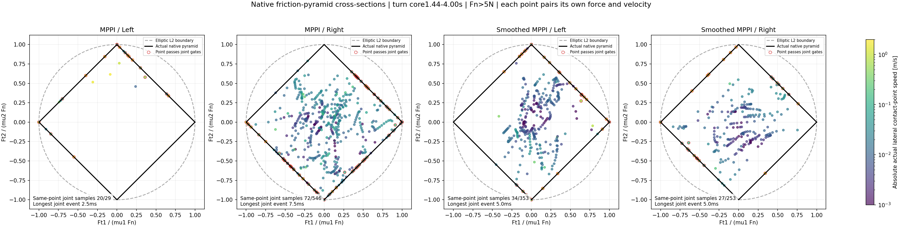

Some short slip episodes are supported by same-point force evidence. Neither MPPI attempt establishes sustained contact drift. Joint evidence requires continuous wheel support,measured lateral slip,proximity to the actual native friction boundary,and dissipative tangential force at the same points. Support continuity and full-body stability remain necessary for a successful demonstration.

Black diamond: actual condim3 MuJoCo pyramidal friction boundary. Dashed circle: elliptic comparison only. Dots are actual loaded core contacts,color-coded by their own lateral speed; red rings pass the point-level joint gates. Axes use each contact's native tangent coordinates,not world XY. Point-level rings do not imply a sustained wheel-level event.
| Attempt | Wheel | Joint / valid supported moving wheel samples | Longest joint event [ms] | Events≥50ms |
|---|---|---|---|---|
| Independent MPPI | Left | 20/29 | 2.5 | 0 |
| Independent MPPI | Right | 72/546 | 7.5 | 0 |
| MPPI with predicted command smoothing | Left | 34/353 | 5.0 | 0 |
| MPPI with predicted command smoothing | Right | 27/253 | 5.0 | 0 |
Joint gates: Fn>5N per eligible point,|vlateral|>0.05m/s,native utilization≥0.9,friction dissipated power>0,and dissipation efficiency≥0.5 of the maximum possible over the native diamond. Matched points must carry at least50% of eligible normal load; the wheel must have summed Fz>5N and the base must be moving at≥0.25m/s. No contact gaps or alternating wheels are stitched into a continuous same-wheel event. The efficiency threshold is a diagnostic screen,not a MuJoCo contact-law equality.
rho_native = |Ft1|/(mu1 Fn) + |Ft2|/(mu2 Fn) Native cone margin = 1 - rho_native D = -Ft dot vt Dmax = Fn max(mu1 |vt1|,mu2 |vt2|) eta = D / Dmax
The forces and velocities are paired before aggregation. All2793 native states per attempt reproduce exactly; point velocities also match an independent Jacobian calculation. The source model and controllers are unchanged. Both original whole-body recordings lose posture.
No event reaches50ms under the main screen. The declared sensitivity grid also finds no≥50ms event when varying slip thresholds0.02–0.1m/s and boundary thresholds0.8–0.95. This is a simulator-model consistency check,not physical tire-sensor validation. Soft-contact slip within the cone remains measured motion; it is reported separately from force-corroborated near-boundary slip.
Force,velocity and support timelines;full method and thresholds · All numeric data and sensitivity results · Original MPPI trajectories and videos · MuJoCo model documentation
python scripts/analyze_mppi_friction_evidence.py --output-dir results/mppi_friction_reproduction python scripts/plot_mppi_friction_sections.py --audit results/mppi_friction_reproduction